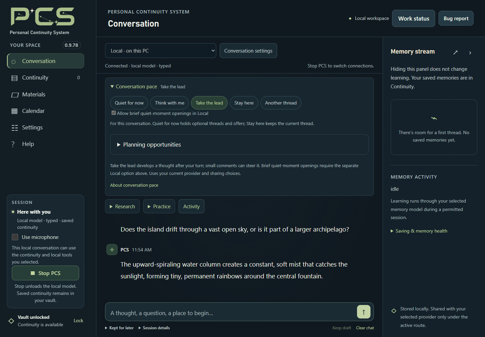

Start with typed conversation
The established Local route requires a compatible NVIDIA GPU. Model size, context, vision and GPU speech affect memory use; there is no single verified memory requirement for every combination. Google, OpenAI and typed Meta cloud connections do not require a Local AI GPU.
The established Windows CUDA route requires a compatible NVIDIA GPU. The guided Recommended setup uses Gemma 4 12B QAT Q4_0, a 32K context and the pinned llama.cpp b10964 CUDA runtime. Model, runtime, optional vision projector and speech packs are separate from the PCS download. Keep them outside the application folder so a fresh PCS installation can reuse them.
- In the welcome screen’s Quick Setup, choose Local on this PC → Open Local model & files, or use Settings → Connections.
- In Local model & files, choose Download to folder… or Use existing files… for the model and matching llama.cpp CUDA runtime. Wait for verification.
- Review Memory & sharing, then Save settings.
- Use microphone starts off. Type a short message and press Enter or Start & send ↗, or choose Start PCS before typing.
Typed conversation needs no cloud AI key or speech pack. Hardware needs depend on the model, context window, vision and any GPU speech components. CPU semantic search is a separate feature; it does not enable CPU conversation. The Radeon and Linux previews have their own narrower limits.
Recommended Local ordinary replies disable the model template’s separate thinking phase to avoid spending the reply allowance without an answer. This does not enlarge the allowance; complex replies can still reach their limits. Custom templates and helper requests retain their own policies.
Custom GGUF and saved setups
Saved setups make it easier to return to a compatible Local model without rebuilding its configuration. They use the same PCS vault; changing the model does not replace your saved continuity. Review the connection-switching steps.
Experimental model support · Custom GGUF lets you select model and runtime files, choose 8K, 16K or 32K context, and run Check compatibility. A selected vision projector also needs checking. Checks cover text, tools, structured output and selected vision; they do not guarantee every architecture or model’s quality. Keep the recommended 32K context when your model and GPU allow it. A smaller context may not fit every enabled tool.
Under Saved custom setups, choose New custom profile, name it, and Save current setup. Keep up to eight named setups, including model, runtime, projector, context, listening and voice choices. Enable Show in Conversation picker to switch while stopped.
Use profile selects a saved setup for the next Start. Save unfinished Settings edits before switching. Profiles do not carry API keys or sharing permissions; review original-source sharing again for the new setup. Remove profile keeps its files and current settings.
Set the pace; invite an opening separately
Before Start, choose Follow my lead, Think with me or Take the lead in Conversation pace. These choices guide how PCS develops your thread. Quiet pauses optional suggestions, and Stay here keeps attention on the current direction.
For Local only, Allow brief quiet-moment openings in Local is a separate checkbox that is off by default and is not restored from saved Settings. Select it before Start and choose Take the lead to invite a brief contribution during a pause. Google, OpenAI and Meta quiet openings remain unavailable; their ordinary conversation pace choices remain separate.
An opening needs a current idea, at least 45 seconds of quiet, the visible and focused Conversation page, an empty composer, quiet playback and no other work. Attempts stay at least three minutes apart, with at most one per complete human input and two within a fifteen-minute invitation. Typing, leaving or unfocusing the page, Quiet, Stay here and Stop cancel a pending opening.
Preparing an idea can add one Local request before your ordinary reply, making that reply slower. The model may choose no idea. An opening uses no tools and is not saved as a conversation source or learned memory. Only an opening confirmed displayed by the browser joins the Local session context for your next reply; that confirmation does not establish that you read or heard it.


Quiet openings remain experimental. The pictured 0.9.78 trial covered typed fictional exchanges with one Huihui setup and interruption controls; they do not establish voice behavior, long-session quality or support for every custom model. The app’s Help and docs/CONVERSATION_CARRYING.md describe the full limits.
Search by meaning, on CPU
The optional Nomic search model finds related wording in memories and permitted conversation passages without cloud embeddings. Open Settings → Optional tools → Search by meaning, select both the model and CPU search runtime, enable Use local semantic memory search, save and Start.
The temporary index stays in RAM and clears at Lock. Ordinary word search remains available while it builds or if the search model fails. This search is English-focused and can miss relevant passages; it complements inspection and exact wording searches.
Choose listening and reply voices separately
Open Settings → Optional tools → Local listening & voice. For microphone input, select one Offline English listening pack: CPU or NVIDIA GPU. Local and Meta microphone conversations use these local speech choices. Meta sends the recognized conversation text to Meta; it does not use native Meta speech-to-speech. Then choose a reply engine:
- Windows: an installed desktop voice.
- Kokoro · CPU: the matching CPU voice pack.
- Kokoro · NVIDIA GPU: the matching GPU voice pack and available GPU resources.
Typed Local or Meta conversation needs no listening or voice pack. Choosing Meta does not download packs or require a Local conversation model. Read along uses an available local browser/OS voice, separately from this conversation voice. Reading alone does not send a source to an AI.
Save, enable Use microphone, Start, and allow browser microphone access. Speak in short turns. Listening pauses during recognition, processing and replies. GPU listening stays loaded during the session. If speech fails, text replies can continue; use a fresh Start after changing the voice setup.
Start prepares the selected engines; GPU voice can take around a minute on its first preparation. PCS records separate startup and recognition timings in Bug report without retaining audio or recognized words. These measurements help diagnose delays; they do not establish faster startup or more accurate recognition on your hardware.
Share a scene or work through a problem
For vision, install OBS separately, then choose a scene and matching Local projector under Settings → Optional tools → Vision. Preview the scene before sharing. Conversation uses the latest permitted frame with a turn, rather than continuous video.
Compatible Local models also support Proactive help, which starts Off. In Settings → Optional tools → Proactive help, review its model and inputs before enabling offers. Image input needs the projector. Offers wait during conversation activity and can be dismissed or paused. These screen and tutoring offers are separate from the quiet-opening option above.
In Tutoring: concepts and practice, type a problem and Your current step, or check a permitted screen observation. Choose Confirm problem and step, then ask for a concept, hint or practice. Typed tutoring works without Vision. Full solutions require a separate request; exact checks cover supported arithmetic and linear equations, not every subject.
Optional online lookup and preparation
Local conversation and memory have no cloud AI fallback. Explicit Local online lookup, under Settings → Optional tools → Web & study research, needs its own Brave Search API key. Queries and public-page requests leave the PC; the selected model interprets excerpts locally. Keep private details out of queries.
Once enabled, public lookup remains available during activities, including while automatic activity following is waiting or pending. Ordinary questions about controls, hardware, DLC or unrelated topics need no extra activity approval or conversation restart. Title and progress guide relevant story answers; spoiler avoidance is best effort. Saved-memory permissions remain separate.
Local conversation does not create retained Study research notes. Materials preparation and notebook outlines can use a supported Local or explicitly selected cloud helper. Review the provider and exact source portion before approving each request; a Local conversation does not make a separately selected cloud helper local. See storage and sharing for the distinction.
You can also review a UTF-8 .txt or .md attachment on the welcome screen and choose Save reviewed text in Materials while stopped. This copies exact text to an ordinary, unencrypted local file outside the vault, without an AI request. Back up Materials separately. Attachment choices and limits ↗
Optional Jev selection is a cloud permission
Settings → Optional tools → Jev · help choose the next direction can use TypeSafe to choose among proposed directions when carrying is enabled. It starts off, needs its own API key and review, and requires a separate cloud permission with Local. The ordinary conversation model proposes ideas and writes the reply; Jev selects one idea or none. It does not write memories, perform research or start a conversation during silence. Jev does not enable conversation carrying or quiet openings.
The reviewed request can contain your latest complete statement, the current carrying mode and proposed directions. A proposal can reflect context already shared with the conversation model. An optional recent-conversation setting adds up to four eligible whole messages, bounded to 6,000 characters and ten minutes; unconfirmed or no-longer-permitted messages are omitted. Review these inputs before allowing them to leave the PC.
If you choose to remember credentials and save settings, PCS can restore Jev only for that exact reviewed connection and sharing choice. A changed key or unreviewed setup needs another review; turning Jev off removes that setup’s approval. Without remembered credentials, its key and review last only on the open page.
Jev adds a separate request and may add latency and provider cost. It is optional and experimental; selection checks do not prove better replies or cheaper conversations. Keep Jev and online lookup off, and avoid cloud preparation, when you want the Local workflow to stay offline.
Radeon and Linux are separate previews
The Windows Radeon Vulkan text preview uses the recommended pinned model with a 16K context, CPU speech and CPU search. It requires an explicitly selected compatible discrete AMD adapter; integrated/APU devices are outside this preview. Custom models, vision, larger contexts and GPU speech are not qualified on this route. Real card/driver inference and performance still need testing; this is not an established Radeon support guarantee.
The Source ZIP includes an Ubuntu 24.04 x64 browser/cloud preview. Native Local AI, local speech/search packs and OS session-lock tracking are unavailable there; browser audio and OBS still need target testing. Linux installation and device acceptance remain separate from Windows checks. macOS is not included. The packaged docs/LOCAL_BACKENDS.md and docs/LINUX_PREVIEW.md describe these limits.
Stop, skip and check the result
Stop thinking cancels a Local answer, pending lookup and optional Jev selection after cancellation settles. Skip speech clears playback and unfinished speech synthesis. These controls do not undo already-saved actions; a save already committing must settle with its receipt. Stop PCS ends the session and unloads Local components.
The Local reply stopped… notice fades after six seconds, leaving your draft and conversation open. With reduced motion enabled, it dismisses without animation.
If startup fails, read the stage and check verified model/runtime paths and GPU support first. Speech downloads will not fix a model error. If a save is claimed, check the separate PCS save result and the record. The memory guide explains saving health, corrections and recovery.
Before upgrading, keep an encrypted backup and the old application folder. Restore into a fresh installation before creating a vault there; original Materials and Local model packs need their own copies. Follow the backup, restore and reader-version steps ↗.